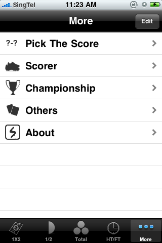
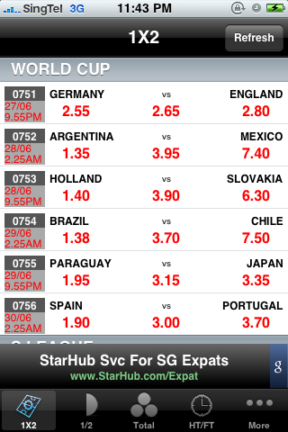
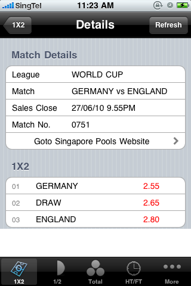
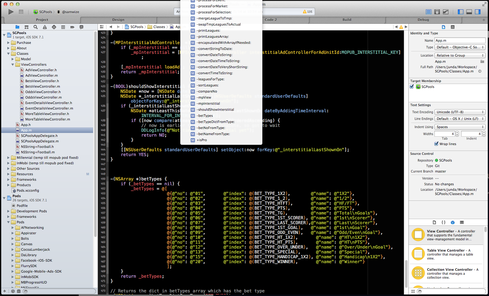

sharing my 8 years in
mobile development
by Junda / @samwize
Export to PDF
Supported only on Chrome.
Click here, then print page.
About Me

Specialty is in mobile development
Used to work in Hoiio
Now solo

2007: Mobile Lead
2011: API Business Lead
2013: Chief Product Officer
2014: Left after 7 years
Hoiio Mobile App


2008: Started as a hobby
2011: Slowed down..
2014: Registered as a business
My Apps
Direction
Create apps I want to use
SG Football (in 2009)
  Bad Code
My libraries (HttpManager, UIManager, etc)
SVN
Support only iPhone
SG Football (in 2014)


SG Football (in 2009)
Awesome Code
Git
Storyboard
Support iPhone 3.5", iPhone 4", iPad
CocoaPods
AFNetworking
Appirater
MKStoreKit
Parse
etc..
And also internal pods!
Project Workspace
Localization
Why localize?
Torchlight app with 3x more users

DEMO of my secret tool
More automation
ui-screen-shooter
itc-localized-screenshot-uploader
The End
Thank You!
You can reach me on my personal blog, technical blog, google+, linkedin, or @samwize